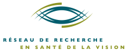

Projets
Nous travaillons à l’interface entre l’esprit, le cerveau, les machines et le monde extérieur, en utilisant des mesures comportementales (y compris le suivi des yeux), des mesures physiologiques et la modélisation computationnelle. Nous travaillons avec des humains (et bientôt avec des animaux, y compris des primates non humains) ainsi qu’avec des ensembles de données ouverts, et une grande partie de notre recherche est axée sur la vision, l’ouïe et les mouvements oculaires, y compris les aspects sensoriels, attentionnels et cognitifs. Nous gardons un œil attentif sur les applications directes aux dispositifs, aux algorithmes et à la santé humaine.
Nous pratiquons la science ouverte!
Financement:



Nous sommes fonctionnons enfin à plein régime après la longue pause imposée par la pandémie.
Voici quelques-uns de nos projets actuels :
Dynamique d’attention visuelle et mouvements oculaires
Responsable : Amanda Pruss (co-supervisée par Chris Pack) - Nous poursuivons le travail de l’article de Yao et al. eLife et étudierons le transfert d’informations entre des mouvements oculaires.
Neuro-AI
Responsable : Yohaï-Eliel Berreby - Nous examinons des questions fondamentales et appliquées liées au fonctionnement des réseaux neuronaux artificiels et biologiques.
Vision active
Responsables : Katarzyna Jurewicz - Katarzyna poursuit son travail, financé par IVADO, sur les aspects computationnels, psychophysiques et physiologiques de la vision active. Et Buxin travaille sur la modélisation de la vision active.
Epilepsie
Responsable : Haoxiang Liu - Nous travaillons sur un projet exploratoire visant à harmoniser ensembles de données et algorithmes ouverts portant sur l’épilepsie.
Flow
Responsable : Oren Gurevitch (co-supervisé par Simone Dalla Bella) - Nous commençons un projet passionnant et hautement exploratoire sur la caractérisation des corrélats physiologiques et phénoménologiques des états d’expérience optimale (ou “flow”).
Strabisme
Responsable : Suresh Krishna - Nous commençons une série de projets sur la perception visuelle et les possibilités d’interventions simples chez les personnes atteintes d’exotropie intermittente.
Musique
Responsable : Suresh Krishna (avec Injy Fouda et Anais Rubsamen) - En collaboration avec Fabrice Marandola, nous travaillons sur le suivi oculaire et les changements attentionnels lors de la performance musicale, dans le but de créer un modèle cognitif complet de la performance musicale.
Google Summer of Code 2023
INCF: Un outil fondé sur les réseaux d’interactions sociales facilitant l’évaluation et les commentaires sur les rapports de recherche. Stagiaire - Jyothi Swaroop Reddy
INCF: Mesure efficace des fonctions visuelles des nourrissons et des jeunes enfants à l’aide d’une application. Stagiaire - Soham Mulye
Un projet exemple visant à construire un logiciel libre de suivi oculaire sur téléphone en utilisant PyTorch est disponible ici.